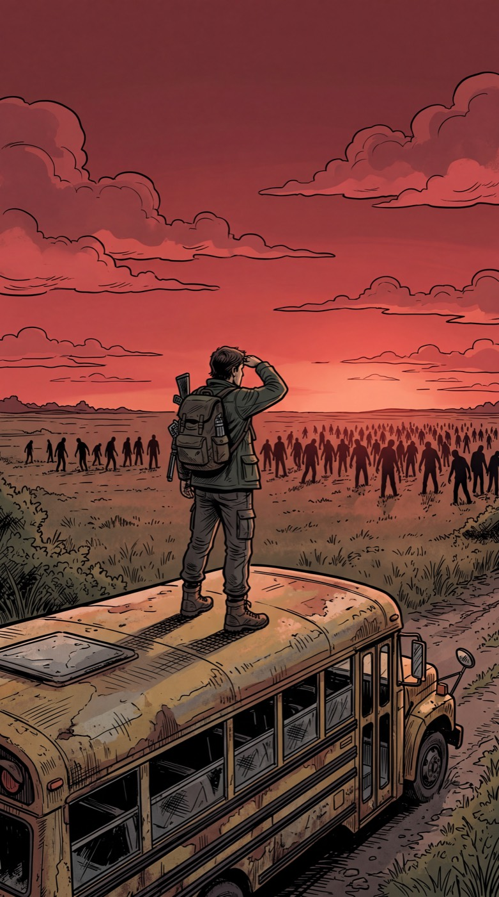
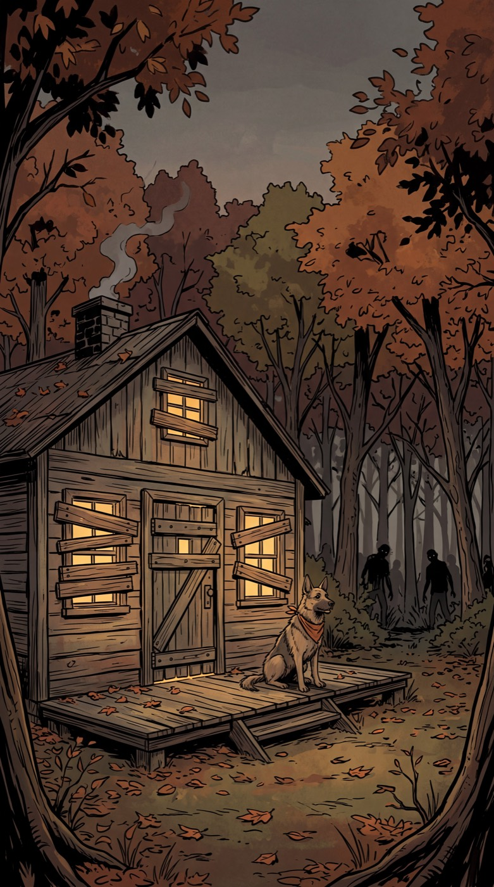
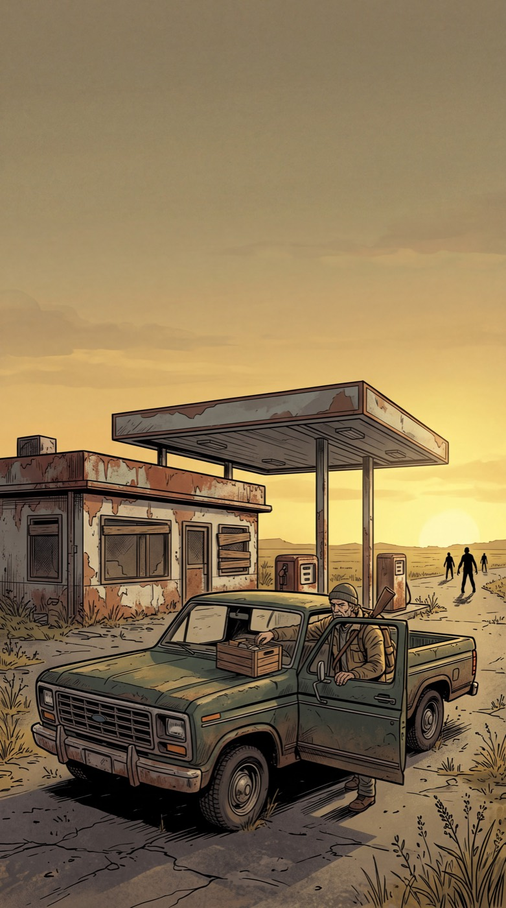
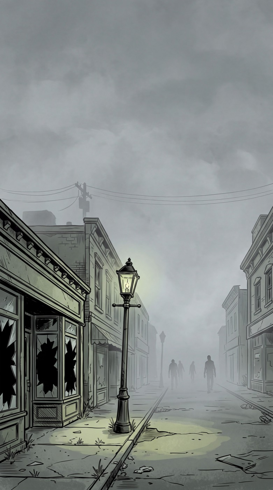

Koleksiyon
Hayatta Kalma
Yeşile dönen şehirler, kış kampları, terk edilmiş yollar. Çizgi roman ve sinematik tarzda, kansız hayatta kalma temalı duvar kağıtları.
17 duvar kağıdı · hepsi ücretsiz
Telefon 10

Kalabalık Yaklaşıyor
Ormandaki Sığınak
Terk Edilmiş Benzinlik 2 Terk Edilmiş Benzinlik 1
Terk Edilmiş Benzinlik 1 Yağmurlu Gece Devriyesi
Yağmurlu Gece Devriyesi Çatıdaki Sığınak
Çatıdaki Sığınak
Sisli Kasaba Kamp Ateşi
Kamp Ateşi Terk Edilmiş Otoyol 2
Terk Edilmiş Otoyol 2 Terk Edilmiş Otoyol 1
Terk Edilmiş Otoyol 1